General conference video and text
And There Shall Be No More Death
The Church of Jesus Christ of Latter-day Saints · April 2016
Study Jesus Christ · Life After Death
What Do Latter-day Saints Believe Happens After Death?
ContinueLatter-day Saints believe death is a temporary separation of body and spirit, not the end of personal existence. Because Jesus Christ rose from the dead, every person will eventually be resurrected.
Begin with Jesus Christ and the people He comforted, then read the witnesses of His Resurrection. From that foundation, explore the spirit world, judgment, and eternal life. His ministry in the Book of Mormon leads us back to hope and care in our own circumstances. Each picture opens its own study panel and full-size view. Follow the journey in order, or begin with the question closest to your heart.
A Savior who knows sorrow
Martha came to Jesus after her brother Lazarus had died. In John 11:21-27, she speaks of her loss and her belief in a future resurrection. Jesus directs that hope to Himself. The promise of life rests in who He is and what He can do.
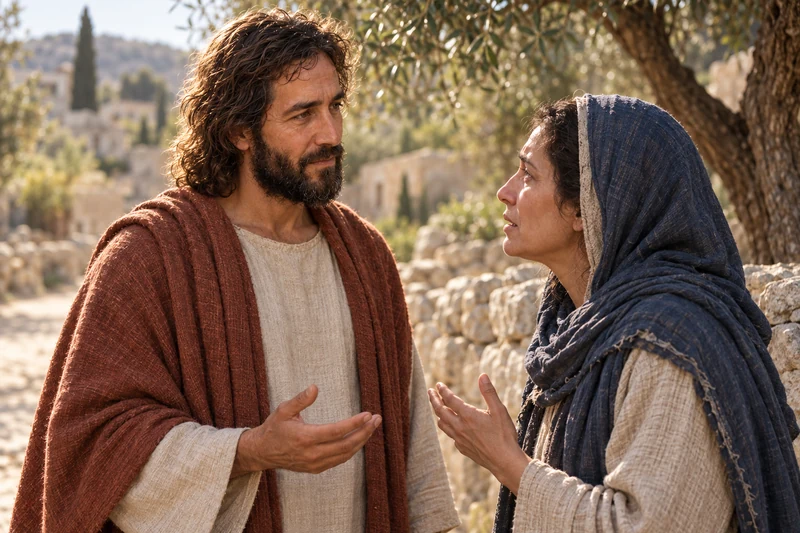
Explore and study
Martha brings her loss and her belief to Jesus. His promise of resurrection begins with an invitation to trust Him.
Later, when Mary and those with her are weeping, Jesus weeps too. Read John 11:32-36 beside His conversation with Martha. Confidence in resurrection and compassion for present sorrow belong in the same account. Tears do not disprove faith.
The raising of Lazarus in John 11:38-44 witnesses Christ's power over death. Lazarus returned to mortal life; the Savior's Resurrection opens the way to immortal life. That distinction helps us read the miracle with hope while recognizing that loved ones are not ordinarily restored to us during mortality.
Notice what Martha believes and what still hurts. If you wish, name one promise you want to hold and one loss you need to speak about. Prayer can include both. If you are accompanying someone who mourns, begin by listening to what they want to share.
If your question begins with a recent loss, the Grief and Faith study offers more room for sorrow, companionship, and practical support. You can begin there and return here when you want to explore the promises of resurrection.
The Savior who weeps with those who mourn also overcomes death. Continue with Mary Magdalene at the empty tomb.
The foundation of Christian hope

Explore and study
Morning light enters an open garden tomb, holding the astonishment and hope of the Resurrection. Mary's grief gives way when the risen Jesus calls her by name.
The empty tomb is only the beginning of Mary's morning. In John 20:11-18, she is still weeping and thinks Jesus' body has been taken. When He calls her by name, she recognizes Him. She then tells the disciples that she has seen the Lord. John presents a personal encounter with the risen Jesus.
In And There Shall Be No More Death, Elder Paul V. Johnson reflects on resurrection after his adult daughter's death from cancer. He teaches that Christ makes the reunion of spirit and body permanent. Read his message beside Mary's witness: Christian hope rests in a living Savior.
The message includes illness and bereavement. You may prefer to read a little at a time, beginning with the teaching about resurrection.
General conference video and text
The Church of Jesus Christ of Latter-day Saints · April 2016
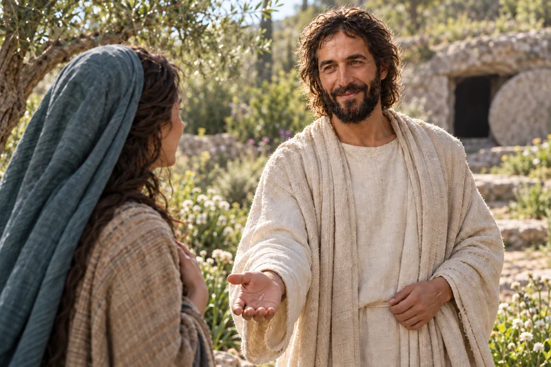
Explore and study
Jesus calls Mary by name, and she recognizes Him. Her encounter turns the morning of sorrow toward the news that He lives.
Compare Mary's concern at the tomb with the message she carries to the disciples. What does Christ's Resurrection let you hope for? Write your own question beside the passage and return to it as the study continues.
Mary's witness opens a larger question: what does Christ's Resurrection make possible for every person?
Christ's victory over physical death
When the risen Jesus comes among His disciples in Luke 24:36-43, He offers peace and invites them to see His hands and feet. He distinguishes His resurrected body from a spirit and eats in their presence. Resurrection is more than the continued life of the spirit after death.
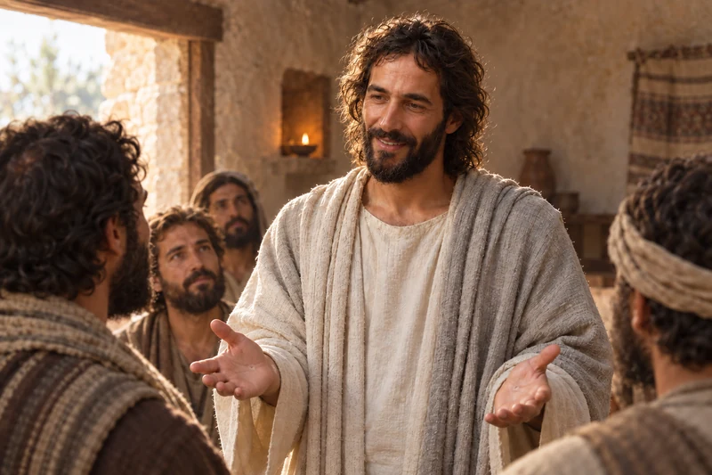
Explore and study
Christ comes among His disciples and offers peace. His hands and His presence testify that the One they mourned is alive.
Paul teaches in 1 Corinthians 15:20-22 that Christ's Resurrection makes resurrection possible for all. Later, in 1 Corinthians 15:42-44 and 1 Corinthians 15:51-57, he describes mortality giving way to immortality and gives thanks to God for victory through Jesus Christ. This universal gift is not something we earn by being strong enough or by grieving in a particular way.
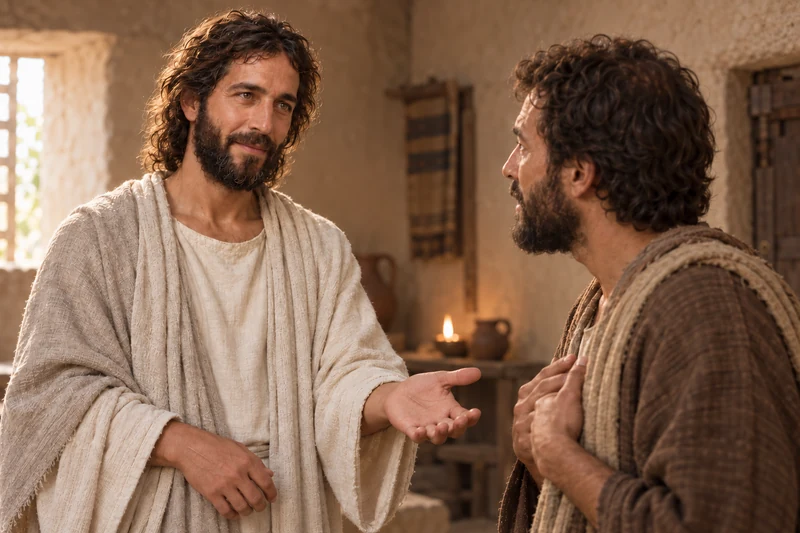
Explore and study
The Savior invites Thomas to witness for himself. John records Thomas’s answer of faith and Christ’s blessing on those who believe without seeing.
Thomas was absent when Jesus first appeared to the assembled disciples. In John 20:24-29, Jesus later invites Thomas to behold His hands and believe. The account also speaks to readers who have not seen Him. John explains his purpose in John 20:30-31: his written witness invites belief in Jesus Christ and life through His name.
Questions about resurrection can be brought to these witnesses patiently. Consider what they testify that Jesus did, then what His living reality means for the person you miss. Hope does not require you to invent details that scripture has not supplied.
Knowing that body and spirit will be reunited helps us distinguish resurrection from the life of the spirit between death and resurrection.
The spirit continues to live
At death, body and spirit separate. Alma 40:11-14 describes spirits continuing to live while they await resurrection. Alma speaks of paradise as peace and rest for the righteous, and of a painful condition for the wicked. These are conditions in the spirit world, distinct from the final reunion of body and spirit.

Explore and study
In a quiet garden, an older man pauses over Alma's words about the life of the spirit after death. The promise of resurrection through Jesus Christ brings hope close to the memories he carries.
Read on to Alma 40:21-23. The body and spirit are to be reunited, and a person is brought before God. Keeping these teachings together helps us avoid treating the spirit world as the end of the story. The Church study guide on the spirit world offers further passages and questions for careful study.
Doctrine and Covenants 138:12-19 describes faithful spirits awaiting the Savior's arrival and the redemption He makes possible. The vision then explains how His message reaches others: in Doctrine and Covenants 138:29-35, Christ commissions messengers from among the righteous to teach those in darkness. They teach faith, repentance, and the ordinances of the gospel.
The vision does not describe salvation as automatic. Doctrine and Covenants 138:58-59 connects redemption with repentance and the ordinances of God's house. Latter-day Saints perform proxy ordinances in temples because those who have died cannot perform these earthly ordinances for themselves. Each person remains free to accept or reject what is offered. Continue with the temple study to explore that connection.
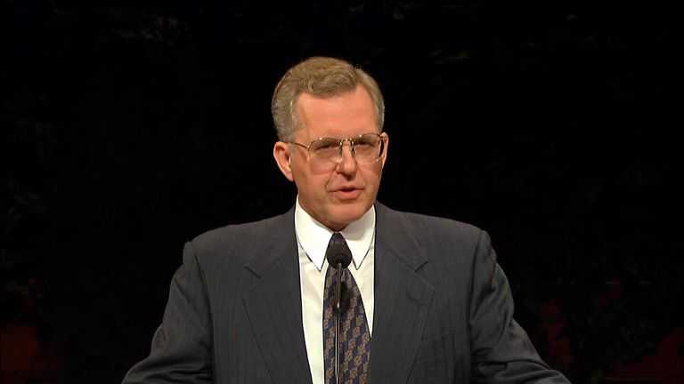
General conference video and text
The Church of Jesus Christ of Latter-day Saints · October 2000
Elder Christofferson explains how temple service bears witness of Christ’s Resurrection and the reach of His Atonement. He makes clear that people who have died retain their agency: proxy ordinances take effect only if they accept them.
General conference video and text
The Church of Jesus Christ of Latter-day Saints · October 2018
President Ballard recalls the losses Joseph F. Smith endured and invites us to study the revelation he received. Doctrine and Covenants 138:29-35 describes Christ commissioning messengers to carry His gospel to the dead.
Find what the vision says Christ and His messengers do. Then separate those teachings from questions it does not answer about a loved one's daily experience. We can trust God's care without claiming to know where a particular person is or what they are doing.
Christ's work reaches across death while honoring repentance and agency. Explore how this hope connects with judgment and eternal life with God.
Mercy, agency, and our eternal future
Living forever and receiving eternal life are related teachings with different meanings. Resurrection reunites body and spirit in immortality. Eternal life is life with God and the kind of life He lives, made possible through Jesus Christ. The Church study guide on eternal life explains this distinction. In John 17:3, Jesus connects eternal life with knowing the Father and Himself.
Judgment is God's work. Doctrine and Covenants 137:7-9 addresses people who died without knowledge of the gospel and teaches that the Lord considers both works and the desires of the heart. His knowledge of a person reaches beyond what family, neighbors, or observers can see. These verses invite trust in His justice and mercy, rather than conclusions about another person's eternal destiny.
Latter-day Saints also believe that family relationships can endure through the Savior and temple covenants. That hope belongs within God's loving plan and respects each person's agency. The families and eternity study develops these promises with attention to the questions real families carry.
The restored gospel describes different kingdoms of glory and invites every person to come to Christ. President Oaks discusses these teachings in relation to our desires, choices, repentance, and the people we become. His message helps distinguish the gift of resurrection from exaltation with God.
Read it as an invitation to follow the Savior. It does not give us a way to assign other people to a kingdom.
General conference video and text
The Church of Jesus Christ of Latter-day Saints · October 2023
President Oaks teaches about the celestial, terrestrial, and telestial kingdoms. He connects final judgment with our choices and what we become through Jesus Christ, repentance, and covenant faithfulness.

Explore and study
Three generations gather around the resurrection account and listen to one another. Shared hope in the risen Christ can hold both testimony and honest questions.
What do these teachings tell you about God's understanding of His children? What remains unknown to you? Consider a way to speak of someone who has died that honors their life and leaves final judgment with the Savior.
These promises invite trust in the Savior's character. His ministry in the Book of Mormon lets us study that character through individual encounters.
Another witness of the risen Savior
The Book of Mormon adds its witness of the same risen Jesus. 3 Nephi 11:1-12 places a multitude near the temple in Bountiful, where the Father introduces His Son and Jesus declares His identity and saving mission. The people encounter the Savior who has overcome death. His ministry among them shows the compassion of the One in whom their eternal hope rests.
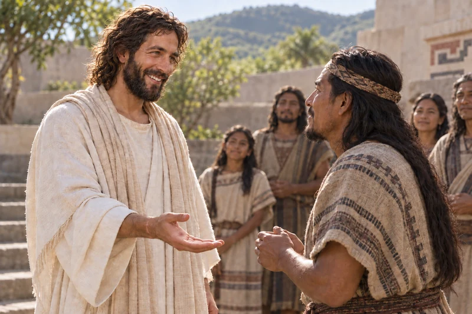
Explore and study
One person steps forward while others wait. The account gives each witness a place in the multitude’s testimony that Jesus Christ has risen.
In 3 Nephi 11:14-17, Jesus invites the people to feel the marks in His hands, feet, and side. They approach individually and become witnesses of His living reality. Read this beside the New Testament witnesses: the Resurrection is the foundation of their worship and hope.
Notice the time given to each person in a large multitude. As a reflection, consider the difference between knowing that Christ loves humanity and trusting that you matter to Him personally.
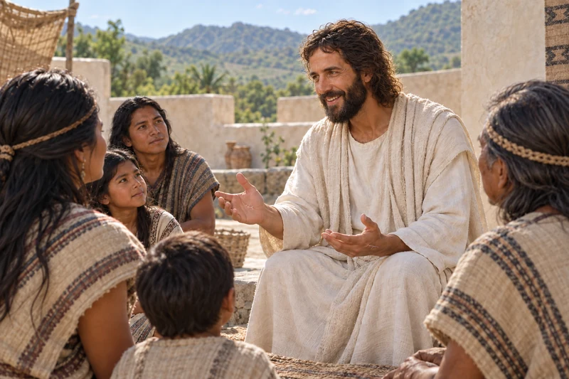
Explore and study
The risen Savior teaches mercy, purity of heart, and peacemaking. His victory over death also calls His followers into a life shaped by His love.
The risen Lord's teaching includes comfort for those who mourn and blessings for the merciful, pure in heart, and peacemakers. Read 3 Nephi 12:3-9 slowly. His invitation joins hope for God's kingdom with the kind of people we are becoming now.
Choose one of these teachings to carry into an ordinary relationship. A merciful response, a patient conversation, or a sincere effort toward peace can be part of discipleship while we look forward to life with God.
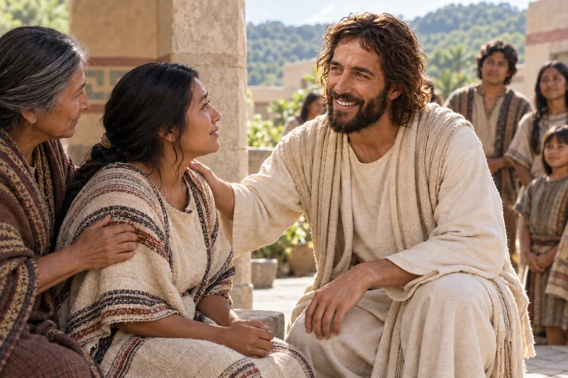
Explore and study
Christ invites the people to bring those who are afflicted. The scripture records His compassion and the healing of every person brought to Him.
3 Nephi 17:7-10 records the people bringing those who are sick or afflicted to Jesus, and His healing them. His compassion reaches those who suffer and the people who help them come. The account witnesses His power and mercy; it does not give a timetable for every healing we seek today.
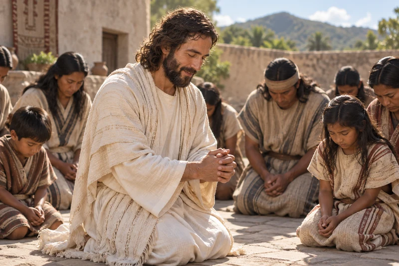
Explore and study
Jesus kneels and prays to the Father. The witnesses describe their joy, while leaving the full words of His prayer unrecorded.
In 3 Nephi 17:15-20, Jesus kneels upon the earth and prays to the Father. The witnesses describe joy beyond their ability to express. The prayer's full words are not recorded, so we let their witness stand without supplying a speech for Him.
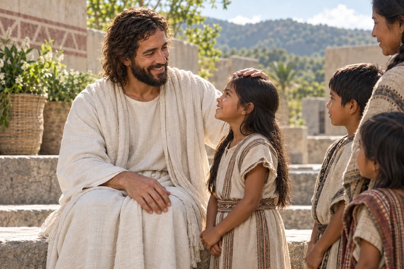
Explore and study
The children receive His attention one by one. Read the whole passage to follow the blessing and the angels’ ministry that comes afterward.
3 Nephi 17:21-24 describes Jesus weeping, blessing little children one by one, and praying for them. The people then see angels minister to the children. This tender scene gives us another view of the risen Lord's love. It describes His ministry to living children, rather than a detailed picture of a child's experience after death.
If you are mourning a child, you can linger with the Savior's care here and continue to the study on child loss for the specific promises about little children.
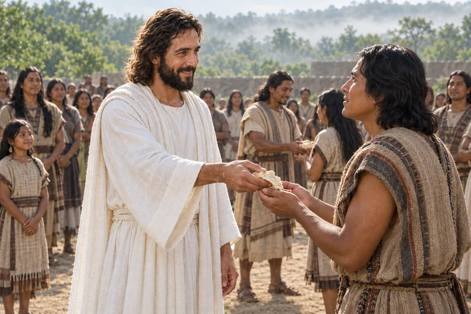
Explore and study
Christ gives bread to His disciples and directs them to share it. The people stand, receive the bread and wine, and are filled with the Spirit.
In 3 Nephi 20:1-9, Jesus directs the people to stand, breaks and blesses bread, and gives it to His disciples to share. He also gives wine and teaches the meaning of partaking. The people receive the Spirit and glorify Him. Remembering the living Savior draws their worship toward the One who gives lasting life.
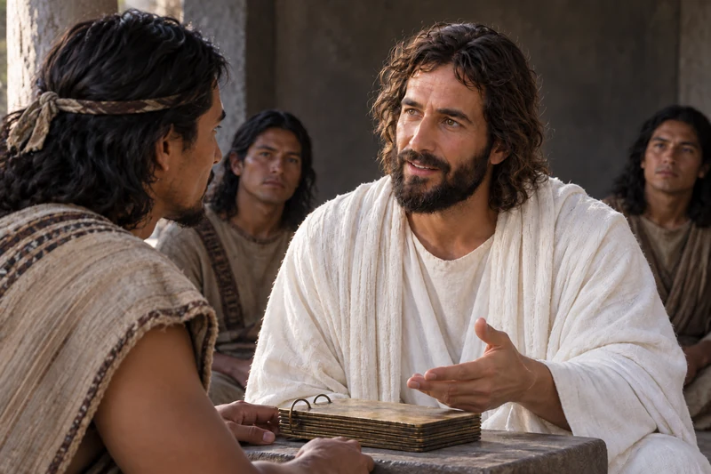
Explore and study
Christ asks about the missing account of saints who rose and ministered. Nephi remembers, and the record is completed so this witness can be preserved.
When Nephi brings the record in 3 Nephi 23:6-14, Jesus asks about the fulfillment of Samuel's prophecy that saints would rise and minister to many. The disciples confirm that it happened, and the missing account is written. This moment connects careful recordkeeping with testimony of Christ's victory over death. The witness matters enough to preserve for those who will read later.
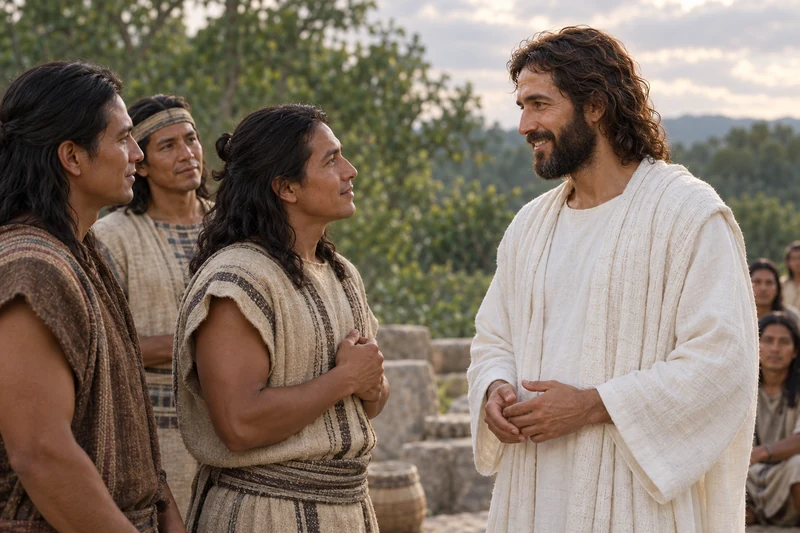
Explore and study
The three desire to continue bringing souls to Christ. He knows their hearts and speaks of their continuing service and the fullness of joy to come.
3 Nephi 28:1-12 records Jesus asking His disciples what they desire. Nine ask to return to Him after their ministry; three desire to continue bringing souls to Him. He knows their hearts and promises joy in His Father's kingdom. Their exceptional callings are not a description of everyone's mortal experience. The conversation invites us to consider how hope for eternal life can deepen our desire to love and serve now.
The pictures give visible settings to these recorded encounters. Clothing, architecture, and the physical form of the record are artistic interpretations; the linked passages provide the account we study.
These Church video excerpts dramatize the scriptural accounts. Notice the personal invitation and compassion in each scene, then return to the verses to distinguish the recorded witness from the production's visual interpretation.
Book of Mormon video excerpt
The Church of Jesus Christ of Latter-day Saints
The people gathered at Bountiful hear the Father introduce His Son and witness the risen Savior come among them. Read His invitation to approach and know Him in 3 Nephi 11:14-17.
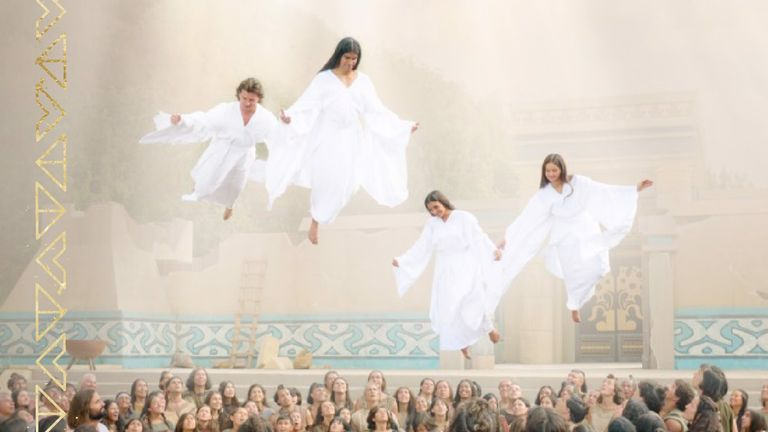
Book of Mormon video excerpt
The Church of Jesus Christ of Latter-day Saints
This scene follows the Savior’s prayer and His care for the children. Return to 3 Nephi 17:11-25 to read how He blessed them one by one and how angels ministered to them.
Compare the invitation to the multitude with Jesus' invitation to His disciples in Luke 24:36-43. What do both accounts teach about His resurrected body? Then consider which part of His ministry in this section helps you trust His character. Keep your observation separate from questions the accounts do not answer.
The risen Lord receives people one by one, teaches, heals, and blesses. Bring that witness into the grief, remembrance, and care of life today.
Hope that reaches into today
On the way to Emmaus, two disciples speak of the death of Jesus and their disappointed hopes. In Luke 24:13-32, He walks with them, opens the scriptures, and is recognized as He breaks bread at their table. Their understanding grows through His presence and teaching.
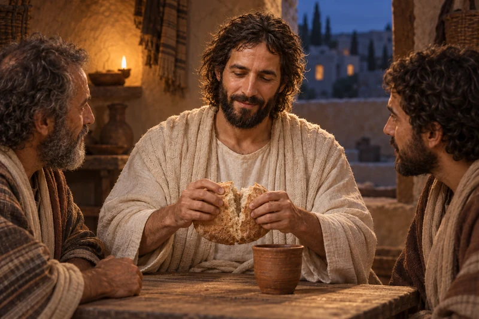
Explore and study
The disciples recognize the risen Lord as He breaks bread. Their conversation returns to the scriptures He had opened along the road.
For our own study, this account offers a gentle invitation: keep turning to Christ in scripture, prayer, and the company of people who will listen. It does not promise a particular spiritual experience on demand. You can take a small next step even when understanding comes slowly.

Explore and study
A grandmother shares a keepsake and memory with her grandson. Remembering someone who has died can hold present sorrow beside hope in Christ's Resurrection.
You may understand the doctrine and still feel someone's absence intensely. There is room for both. A familiar story, an ordinary meal, or a remembered kindness can carry love through a difficult day. You need not hurry past sorrow to prove that you believe.
Mosiah 18:8-10 places bearing burdens, mourning together, and offering comfort within the covenant to follow God. When you support someone in grief, ask what would help, listen without pressing for a lesson, and offer practical care you can continue. You do not need to explain why their loved one died.
In Doors of Death, Elder Russell M. Nelson discusses physical death, the spirit world, resurrection, and judgment. His invitation to care more generously for others brings the study back to the time we have today.
Paul closes his teaching about resurrection with a call to faithful labor in 1 Corinthians 15:58. Hope in the risen Savior can become a visit, a meal, a remembered name, or steady companionship.

General conference video and text
The Church of Jesus Christ of Latter-day Saints · April 1992

Explore and study
A neighbor tends a small herb garden for someone who needs help. Such quiet service gives present purpose to Paul's promise that faithful labor in the Lord is not in vain.
Moroni 7:41-48 connects hope in Christ's Atonement and Resurrection with faith and charity. Consider one person you can care for this week, including yourself. The next step can be small and sincere.
The invitation to walk with Christ can become personal in many circumstances. Consider grief, illness, loneliness, caregiving, and uncertainty through the next five devotional scenes.
The living Savior and the life before us
The following five pictures are devotional interpretations that place the risen Christ beside people facing familiar circumstances today. They invite reflection on His love and living ministry. They do not portray reported appearances or promise a particular outcome. Read them with the scriptures and with the real needs of people in your own life in mind.
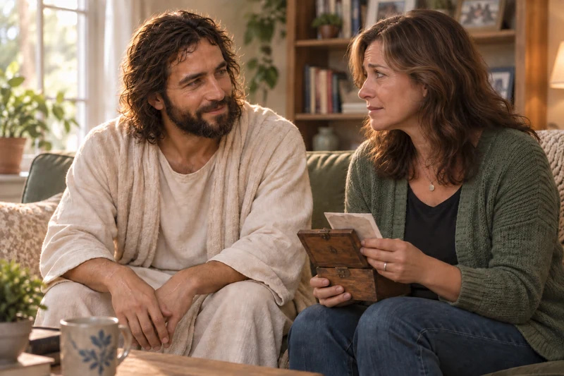
Explore and study
A keepsake rests in her hands as she turns toward Him. This devotional scene invites us to bring sorrow to Christ and to listen with care when another person mourns.
A keepsake can bring gratitude and grief into the same moment. Christ's Resurrection lets us hope beyond death while we continue to miss someone now. Return to John 11:32-36 and notice His compassion among those who mourn. You can speak a loved one's name, preserve a memory, and let someone share your sorrow without finding an explanation for the loss.
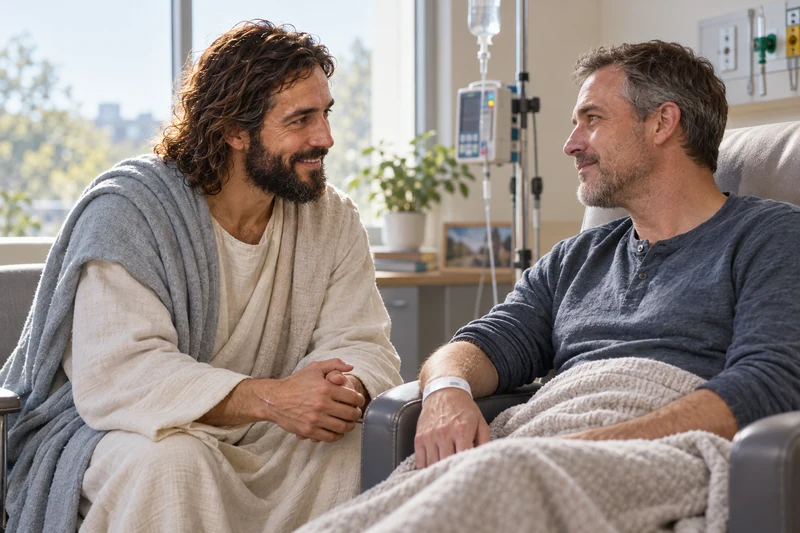
Explore and study
The treatment room is quiet as they look toward one another. Christ’s knowledge of pain can sustain faith alongside medical care and the help of people who stay near.
Alma 7:11-13 teaches that the Savior takes upon Himself pains, sicknesses, death, and infirmities, and knows how to help His people. The hope of resurrection is especially personal when the body is vulnerable. Prayer, medical care, and the help of loved ones can belong in the same day; needing treatment does not diminish faith.
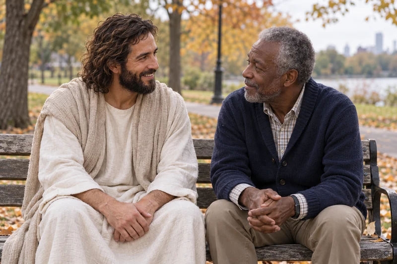
Explore and study
A shared bench becomes a place to speak and be heard. Hope in Christ can move us to notice someone, make time, and offer dependable companionship.
After a death or a difficult change, familiar routines can become quiet. The individual attention in 3 Nephi 11:14-17 invites reflection on each person's worth to Christ. As a practical response, consider one person you might call, sit beside, or invite for a walk. A small connection can be a way to give or receive care today.
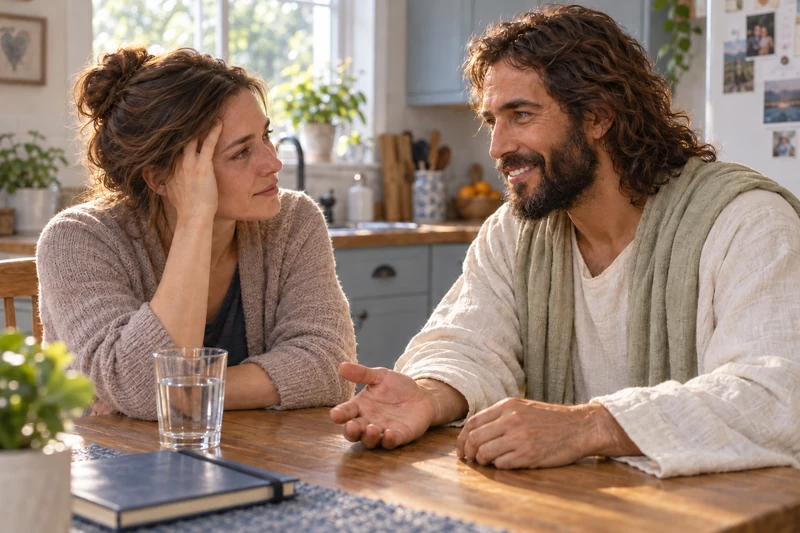
Explore and study
She pauses at the kitchen table and meets His eyes. His invitation to come and find rest can accompany the practical help, rest, and support a caregiver needs.
Caregiving can include devotion, exhaustion, and questions about what lies ahead. In Matthew 11:28-30, Jesus invites the weary to come to Him and learn of Him. You can bring both love and fatigue into prayer. Letting another person share a task or sit with you can be one way to receive the burden-bearing care taught in Mosiah 18:8-10.
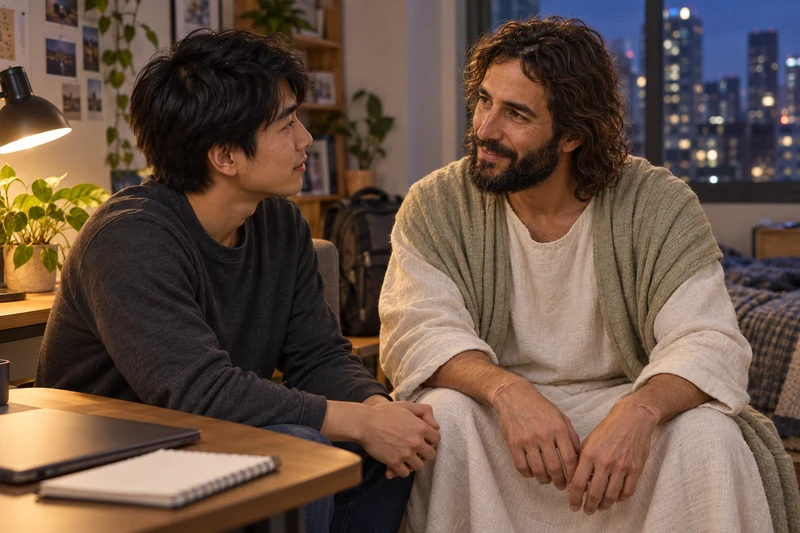
Explore and study
The work on the desk can wait for a moment of attentive conversation. Trust in Christ’s living hope can support a next faithful step when the future remains uncertain.
Work, responsibilities, and unanswered questions can narrow our attention to what might go wrong. Moroni 7:41-48 grounds enduring hope in Christ's Atonement and Resurrection, and joins that hope to charity. Your worth and eternal possibilities reach beyond one result. You can take the next honest step, seek wise help, and continue caring for others while an answer is still unknown.
Which scene feels nearest to your life today? Read its linked passage and name what it actually teaches about Jesus Christ. Then choose one small response: a prayer, an honest conversation, an offer of help, or a request for support. You do not need to resolve every question about eternity before receiving or giving love today.
Choose a question from your own circumstances and carry it into the official readings and messages below.
Read and watch with the scriptures open
These Church messages develop different parts of the same study. Choose the question you want to explore and compare the teaching with the linked scriptures. Conference messages include personal experiences; you can read at your own pace.
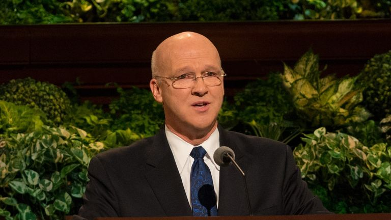
General conference video and text
The Church of Jesus Christ of Latter-day Saints · April 2017
Drawing on his experience as a physician, Elder Clayton speaks about birth, death, and hope in Jesus Christ. He follows the journey from the spirit world to resurrection and judgment, testifying that every person will rise again.
General conference video and text
The Church of Jesus Christ of Latter-day Saints · October 2019
President Oaks explains what scripture teaches about the spirit world and the work of salvation there. When questions remain unanswered, he counsels trust in the Lord and care in distinguishing revealed doctrine from speculation.
When you are ready, choose a related study that meets the question you want to explore next.
Explore the hope of enduring relationships through Jesus Christ and temple covenants.
Consider prayer, patient faith, and help for what you are facing today.
Read the promises concerning little children alongside a compassionate discussion of loss.
Study proxy ordinances, agency, and the Savior's invitation to every generation.
{kind=link}